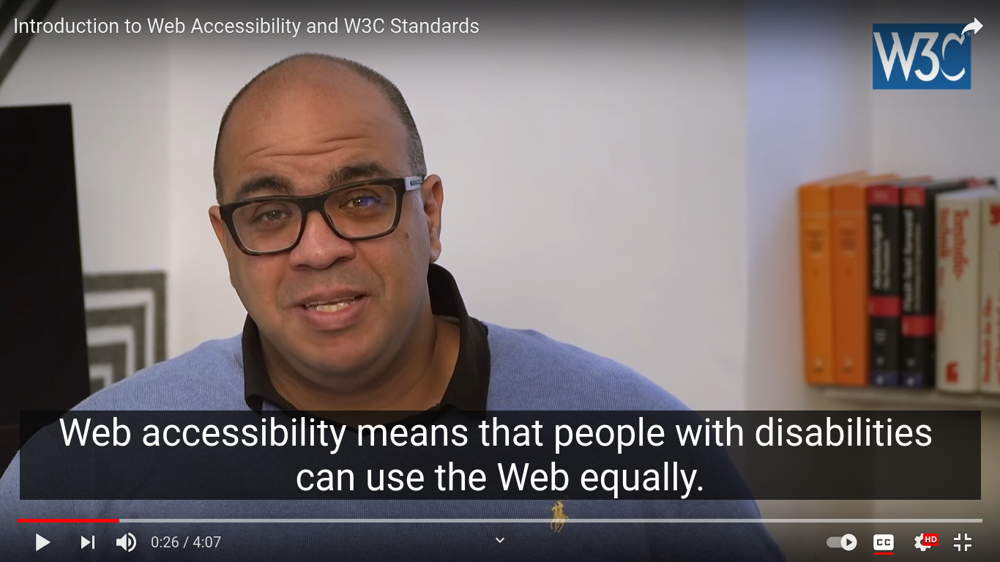
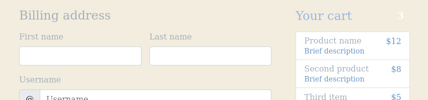
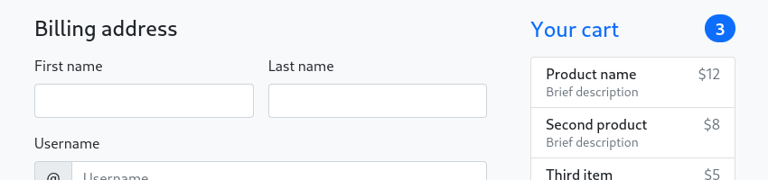

Web Accessibility
Dev Community - Mai 2021
—Anne-Victoria Meyer
Web Accessibility
Inhalte im Internet so gestalten, dass Menschen mit Behinderungen sie auch benutzen können
18,4 %
der Menschen in Österreich haben eine Behinderung
---
Quelle: Sozialministerium
Gründe für Accessibility
- Gleichbehandlung von Menschen mit Behinderungen
- Accessibility verbessert Usability für alle
- Rechtliche Anforderungen
Arten von Behinderungen
- Sehen
- Hören
- Motorik
- Aufmerksamkeit, Denken und Lernen
- ...
Hilfsmittel
- Screenreader
- Tastatur
- Bildschirmlupe und Zoom
- Stylesheets, Schrift-Anpassungen
- Bildschirmtastatur
- Stab, Switch, Pedal
- ...
Eingabe mit Stab

---
Bild: W3C
Accessibility ist für alle gut
Drei Beispiele
Für alle gut: Untertitel

---
Video: W3C
Für alle gut: Benutzbarkeit mit Tastatur
---
Bild: Pexels
Für alle gut: Kontrast
 Web Content Accessibility Guidelines (WCAG)
- Richtlinie zur Umsetzung von Web Accessibility
- Gibt einen Katalog von Anforderungen vor
- Drei Konformitäts-Level: A, AA, AAA